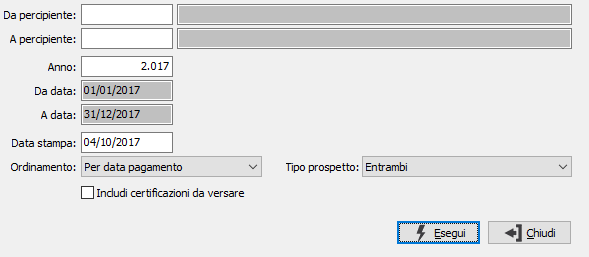

Stampa schede nominative
Il programma permette la stampa delle schede nominative di ciascun percipiente.
La stampa normalmente viene eseguita per un intero anno e per ciascun percipiente vengono riportati tutti i dati necessari per la gestione Irpef e INPS.

DA PERCIPIENTE: indicare il codice del percipiente, con cui iniziare la stampa. Sul campo sono attive le funzioni di ricerca (F9).
A PERCIPIENTE: indicare il codice del percipiente, con cui terminare la stampa. Sul campo sono attive le funzioni di ricerca (F9).
ANNO: indicare l'anno dei movimenti. Il campo è obbligatorio.
DATA STAMPA: indica la data in cui viene effettuata la stampa. Viene proposta la data di sistema.
ORDINAMENTO: determina l'ordinamento in stampa: per data pagamento, per data movimento, per numero movimento.
INCLUDI CERTIFICAZIONI DA VERSARE: definisce se includere nella stampa anche le certificazioni non ancora versate.
TIPO PROSPETTO: definisce quale prospetto aggiungere alla stampa; ritenute Irpef, ritenute Inps/Enasarco oppure entrambi.